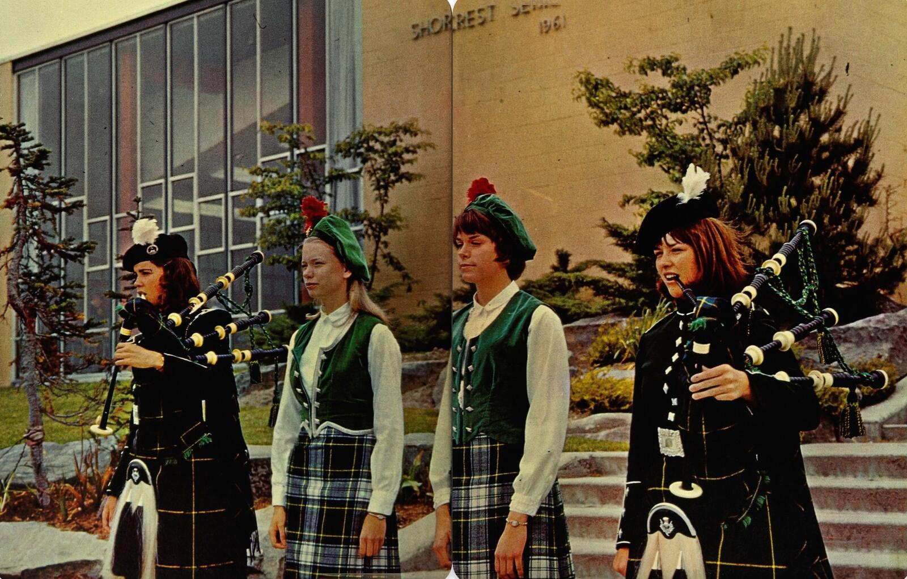
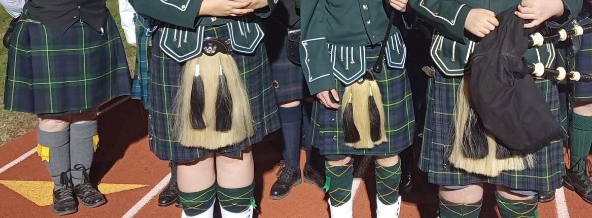
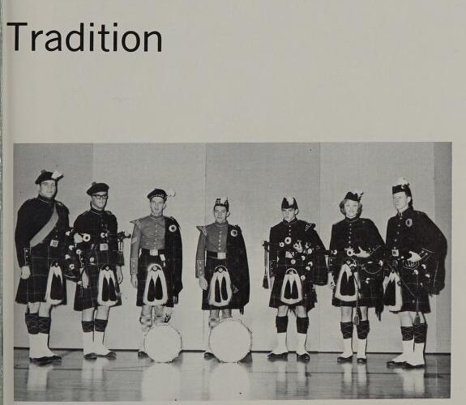
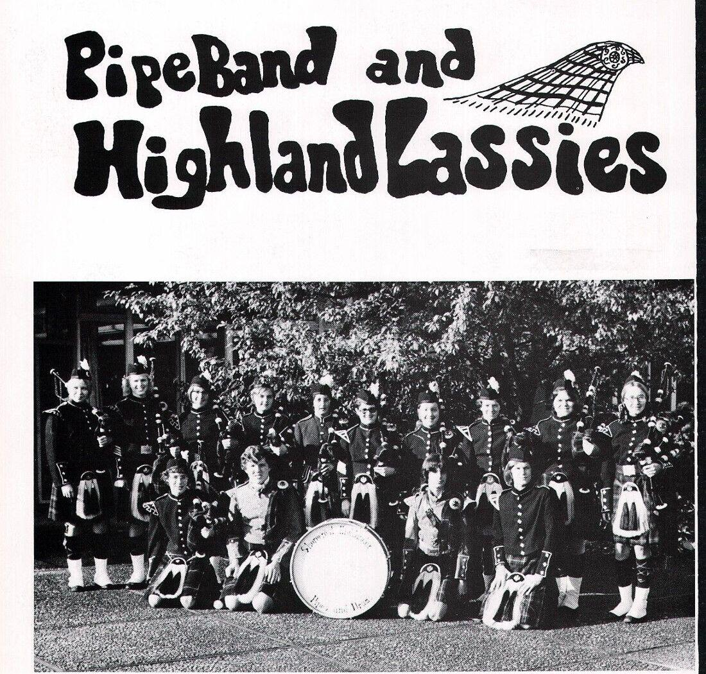
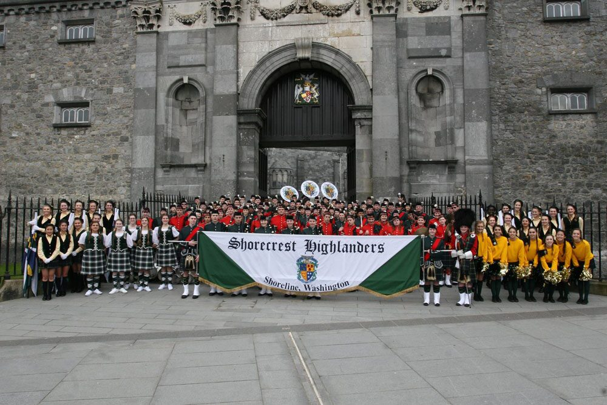
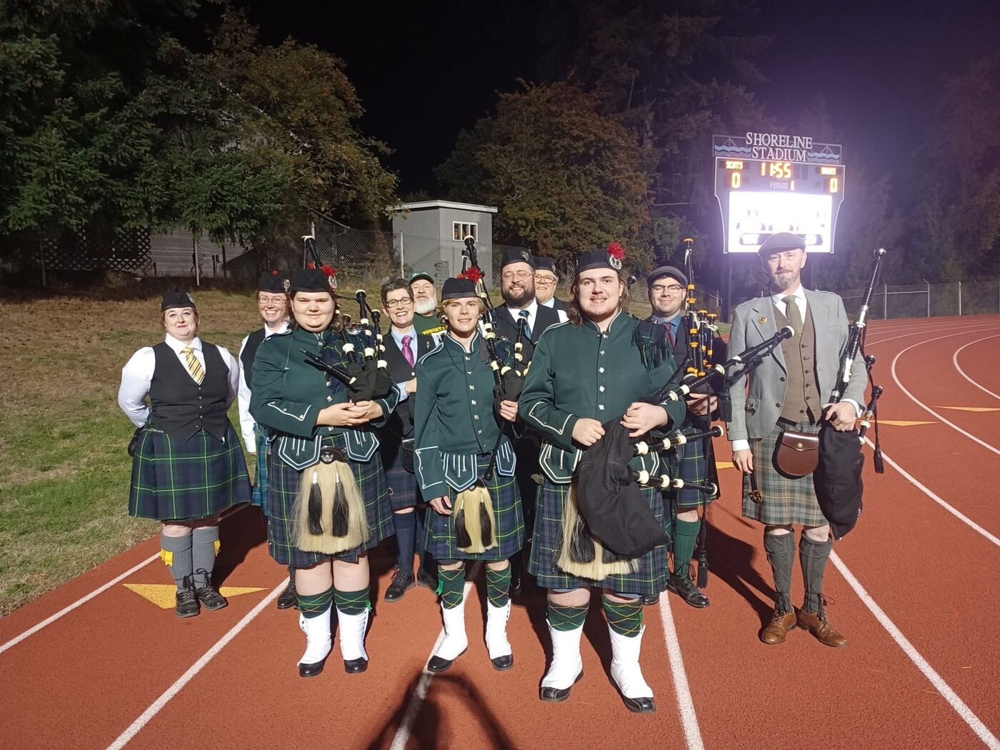

A brief history of the Shorecrest Pipers
Origins (early 1960s)
Shorecrest High School opened in September 1961, and a pipe band and Highland dance club were founded within the school's first years. Alumni of that first pipe band, whose members graduated in 1965, recall a fellow student founding the group and persuading the administration to support it before it got off the ground.

The Gordon tradition (1967)
The student body chose forest green, navy, and old gold as school colors, then discovered the three matched the tartan of Clan Gordon, and adopted the Highlander nickname to match. In 1967 the school received permission from the Chief of the Clan to wear the Gordon tartan and serve as representatives of the Clan, a connection Shorecrest and its pipers have kept ever since. The Clan motto, Bydand, which in Scots means "steadfast," became a motto and part of the school's vocabulary.

Piping as a class
Shorecrest was unique among American high schools in originally offering bagpipes as a credited music class, but today it is an extracurricular club activity under the music program. The pipers perform at school events, appear as the school's official symbol at assemblies and ceremonies, and march at the head of the Highlander Marching Band, an all-volunteer spring extracurricular club of more than 100 musicians, flag bearers, dancers, and pipers that is still part of today's Shorecrest. When the pipers strike up "Scotland the Brave," the crowd would traditionally stand and clap along.


The Auld era (1988–2023)
Kevin Auld began piping as a Shorecrest student in 1988, learning from longtime instructor Don MacKay, and went on to a fourteen-year tenure with the Washington Scottish Pipe Band. He returned to teach the Shorecrest piping program in 2001, a residency that ran more than two decades. Under his instruction the band traveled to Canada, California, and several times to Ireland, including the St. Patrick's Day parade in Dublin, one of the largest parades in the world.
In March 2016 the Highlanders traveled to Ireland once more to play in the St. Patrick's Day parade in Dublin and in several other cities. They won "Best Overall Band" in the Dublin competition and "Best Musical Performance" at Limerick.

The revival (2024–present)
After a brief hiatus due to the global COVID pandemic in 2020–2021, the program returned in 2024 under Alexa Boss. She brings thirty-four years of piping and twenty-two years of teaching students of all ages, along with instruction from world-class pipers around the globe. She has competed solo and with bands domestically and internationally, including at the World Pipe Band Championships, winning prizes as both a soloist and a band member. In her words, being part of the revival at Shorecrest is "a dream come true."

Today's club
Students begin on practice chanters before graduating to the full pipes after a few months' regular practice. Pipers and drummers rehearse twice a week after school and perform at school and civic events across Shoreline and the greater Seattle area. The club is open to everyone and welcomes complete beginners—no prior music required. The program feeds a wider regional pipeline: Shorecrest-trained players have gone on to teach and compete with the Northwest Junior Pipe Band, and in 2021 a group of pipers who first met outside Shorecrest founded Cascadia Pipe Band, which rose to Grade 2 and played at the World Pipe Band Championships in Glasgow in 2025.